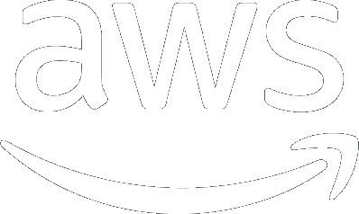
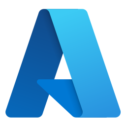
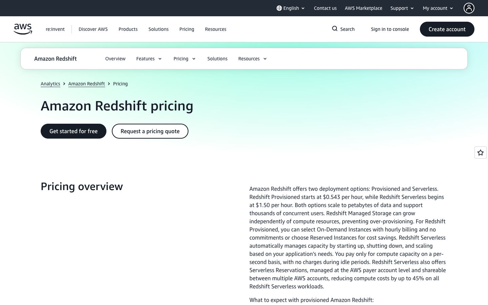
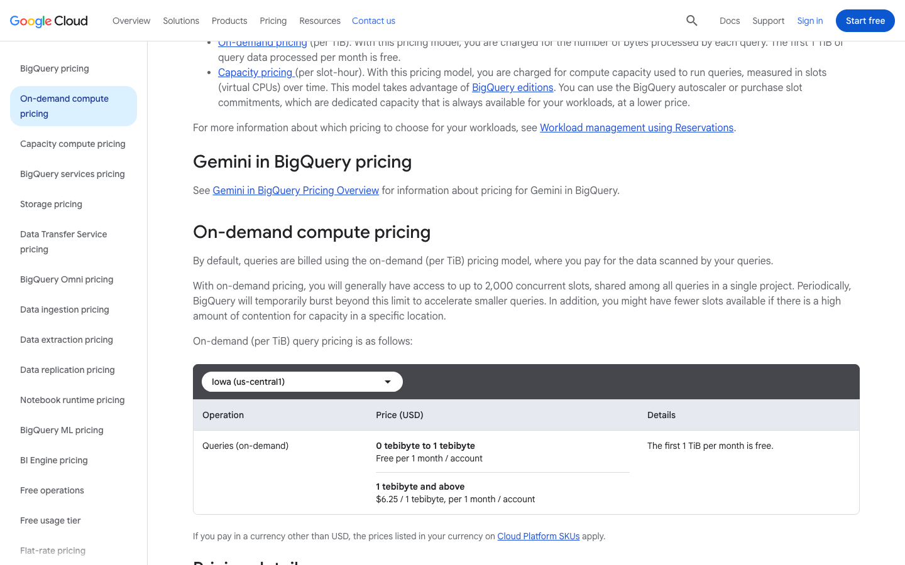
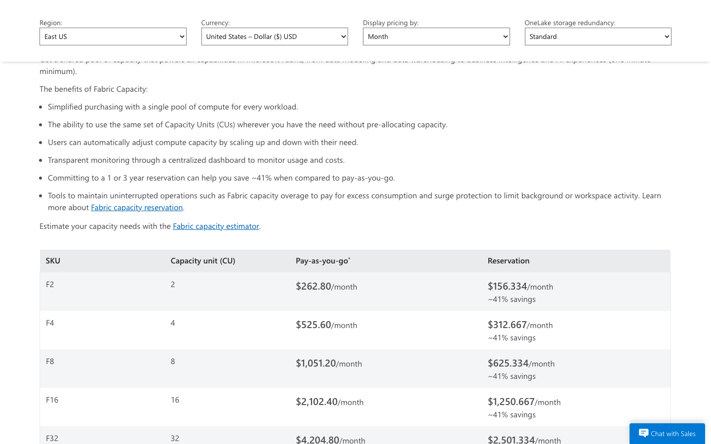

Servicios de computación en la nube
OPTATIVA V
NANCY RUIZ MONROY
Unidad 1 Actividad 4
12 de septiembre de 2026
Qué se compara y cómo se navega
El primer tebibyte que se consulta cada mes en BigQuery no cuesta nada y el siguiente cuesta 6.25 dólares; en Azure una base de datos pequeña se cobra por mes, 4.90 dólares, y en AWS una instancia mínima de PostgreSQL se cobra por hora, 0.016 dólares. Las tres marcas venden lo mismo, cómputo y almacenamiento para datos, pero lo miden con unidades distintas. Esta presentación pone a AWS, Google Cloud y Microsoft Azure bajo los mismos tres criterios que pide la actividad, costos, interoperabilidad con otras tecnologías y hardware mínimo, para sus servicios de Big data, bases de datos y tableros. Antes de las marcas hay tres diapositivas con el marco de Chopra (2017), porque las preguntas sólo se entienden con él.
Se navega con las flechas o tocando los bordes. Con Esc se ve el mapa completo. Cada tarjeta del menú salta a su sección; el botón Menú del pie regresa a él.
La nube según Chopra: elástica y cobrada por uso
Chopra (2017) define la nube como un grupo de servidores interconectados, públicos o privados, cuyos datos y aplicaciones quedan al alcance de un grupo de usuarios a través de la red, mientras "la infraestructura y la tecnología de la nube no son visibles para el usuario final" (p. 1). La misma página añade la propiedad que explica todo lo que sigue: el sistema es elástico, crece y se contrae según la necesidad del cliente.
De la elasticidad sale la forma de cobrar. El autor compara el modelo con el medidor de luz: "se te cobra sólo por el tiempo en que usas los servicios de la nube" (Chopra, 2017, p. 13). Por eso el Big data y las bases de datos de esta presentación se cobran por hora de nodo, por tebibyte consultado o por capacidad; sólo los tableros conservan la lógica de licencia, por usuario al mes.
Modelos de servicio: dónde cae cada producto
Chopra (2017) resume los tres modelos en una línea cada uno: en SaaS "usas el software pero no lo posees", en PaaS "usas la plataforma para desarrollar aplicaciones" y en IaaS "usas el hardware y el software como una máquina virtual" (p. 52). Su tabla 1.1 ya pone a AWS como ejemplo de IaaS y a Azure y Google como PaaS y SaaS (p. 15). Los nueve servicios de esta comparación caen en los dos niveles superiores: nadie administra máquinas.
Big data
Amazon Redshift, BigQuery y Microsoft Fabric.Modelo PaaS: el proveedor pone hardware, motor y escalado; el usuario pone tablas y consultas SQL.Bases de datos
Amazon RDS for PostgreSQL, Cloud SQL for PostgreSQL y Azure SQL Database.Modelo PaaS: base administrada con respaldo y réplica incluidos, que es la técnica de replicación que Chopra describe para el DBMS en la nube (2017, pp. 51-52).Tableros
Amazon Quick Sight, Looker Studio y Power BI.Modelo SaaS: se abren en el navegador, no hay servidor que instalar, y se pagan por usuario o son gratuitos.Interoperabilidad y hardware: cómo se leen los criterios b y c
Interoperabilidad, según Chopra
El capítulo 2 pide estandarizar "las cargas de trabajo, la autenticación y el acceso a datos, así como las partes que deben trabajar juntas" (Chopra, 2017, p. 68), y reduce los casos de uso de NIST, OMG y DMTF a cuatro básicos (p. 73):
- Autenticación: la misma identidad sirve en otro proveedor.
- Migración de cargas: lo que corre en una nube se sube a otra.
- Migración de datos: los datos se mueven de un proveedor a otro.
- Administración de cargas: herramientas propias manejan recursos de varios proveedores.
En cada marca, la pestaña Interoperabilidad se ordena así: formatos y estándares abiertos (casos 3 y 4), conectores y drivers (caso 4) e integración con fuentes externas, sea por consulta federada o por réplica (caso 3).
Hardware mínimo, en dos niveles
La pregunta viene del software instalable, y en la nube el hardware lo pone el proveedor: la infraestructura dinámica hace que "el hardware y el software subyacentes respondan dinámicamente a los cambios de demanda" (Chopra, 2017, p. 24). Por eso se contesta en dos niveles.
Nivel 1, lo que pone el usuario: el portal web de autoservicio que Chopra lista como requisito de todo servicio en la nube (p. 24), es decir, un navegador soportado y conexión a internet.
Nivel 2, lo que reserva el proveedor: la unidad más pequeña que deja contratar (nodo, instancia o capacidad), con sus vCPU y memoria. Ese mínimo es la referencia de entrada, no la configuración de rendimiento óptimo: el tamaño adecuado depende del volumen de datos, la concurrencia y el tipo de consultas, y en las tres marcas se ajusta hacia arriba sin cambiar de servicio.
Elige por dónde empezar

Amazon Web Services
Redshift, RDS for PostgreSQL y Quick Sight. Cobra por hora de nodo y por usuario.

Google Cloud
BigQuery, Cloud SQL y Looker Studio. Cobra por datos consultados; el tablero es gratuito.

Microsoft Azure
Fabric, Azure SQL Database y Power BI. Cobra por capacidad compartida y licencias por usuario.
O sigue en orden: después del menú viene AWS. Dentro de cada marca, la flecha hacia abajo recorre sus tres diapositivas.
AWS · Redshift, RDS y Quick Sight
Amazon Web Services es la marca que Chopra (2017) usa como ejemplo de IaaS (p. 15), pero sus servicios de datos son PaaS y SaaS. Para Big data está Amazon Redshift, un almacén columnar que se contrata por nodo (el más pequeño, ra3.large, sale en 0.543 dólares la hora) o sin servidor, por unidades de procesamiento RPU. Para bases de datos, Amazon RDS administra seis motores; aquí se toma PostgreSQL. Para tableros, Amazon Quick Sight, que en 2026 cambió de nombre desde QuickSight y cobra por rol de usuario.
El dato que sorprende es la escala del salto entre servicios: la instancia mínima de RDS cuesta 0.016 dólares la hora y el nodo mínimo de Redshift 0.543, treinta y cuatro veces más. En AWS la diferencia entre "una base" y "un almacén de datos" se paga desde la primera hora.
AWS · los tres criterios
Redshift.ra3.large a USD 0.543/h por nodo (9.22 MXN), unos USD 396 al mes si corre todo el tiempo (6,727 MXN). Serverless: USD 0.375/RPU-h (6.36 MXN), con crédito de USD 300 por 90 días para cuentas que nunca lo han usado. En Mexico Central: USD 0.57015 y 0.39375.
RDS for PostgreSQL.db.t4g.micro Single-AZ a USD 0.016/h (0.27 MXN), unos USD 11.68 al mes (198 MXN); almacenamiento gp3 a USD 0.115 por GB-mes (1.95 MXN). En Mexico Central: USD 0.017 y 0.121. Cuentas nuevas: hasta USD 200 en créditos durante seis meses.
Quick Sight.Author USD 24/usuario-mes (407.30 MXN), Reader USD 3 (50.91 MXN); Author Pro USD 40 y Reader Pro USD 20. Sin precio por región.
Fuente: páginas oficiales de precios de Redshift, RDS for PostgreSQL y Quick Sight, consultadas el 12-09-2026, región US East (N. Virginia).
Formatos y estándares abiertos.Redshift está basado en PostgreSQL y habla SQL; con Redshift Spectrum consulta archivos en S3 en Parquet, ORC, Avro, JSON y CSV sin cargarlos, con catálogo en AWS Glue, Athena o un metastore de Hive. Es el caso de migración de datos de Chopra: los archivos siguen en formato abierto.
Conectores y drivers.Drivers JDBC, ODBC y Python propios de Redshift, más la Data API (HTTPS sin conexión persistente). RDS se conecta con cualquier cliente estándar del motor, por endpoint DNS y puerto 5432 en PostgreSQL.
Integración con fuentes externas.Consultas federadas de Redshift a RDS y Aurora (PostgreSQL y MySQL) e integraciones zero-ETL desde RDS, DynamoDB, Salesforce, SAP y ServiceNow. Quick Sight se conecta a 29 almacenes relacionales, entre ellos Redshift, Athena, S3, Snowflake, BigQuery y PostgreSQL, y se embebe en aplicaciones con su SDK de JavaScript.
Fuente: documentación oficial de Redshift, RDS y Quick Sight, consultada el 12-09-2026.
Nivel 1, cliente.Un navegador soportado por Quick Sight (Safari 13 o posterior; Chrome y Firefox en sus últimas tres versiones; Edge en la última) y conexión a internet. La consola de AWS ya no publica una tabla de navegadores; sólo consta que Internet Explorer 11 dejó de soportarse en 2022.
Nivel 2, instancia mínima.En Redshift, un nodo ra3.large con 2 vCPU · 16 GiB y hasta 1 TB de almacenamiento administrado (un clúster de un solo nodo no se recomienda para producción); en RDS, db.t4g.micro con 2 vCPU · 1 GiB, procesador Graviton2 y un mínimo de 20 GiB de disco gp3. Quick Sight no tiene instancia: es SaaS.
Fuente: guías oficiales de Redshift, RDS y Quick Sight, consultadas el 12-09-2026.
AWS · la página de precios de Redshift

Captura real de aws.amazon.com/redshift/pricing, tomada el 12 de septiembre de 2026, región US East (N. Virginia): "Redshift Provisioned starts at $0.543 per hour". Nada de maquetas.
Google Cloud · BigQuery, Cloud SQL y Looker Studio
Google Cloud invierte la unidad de cobro. BigQuery, su servicio de Big data, no vende nodos: bajo demanda cobra por tebibyte de datos que cada consulta procesa, y regala el primero de cada mes. Cloud SQL administra MySQL, PostgreSQL y SQL Server con instancias que arrancan en núcleo compartido. Looker Studio es el tablero, y su versión de autoservicio "sigue disponible sin costo", con una edición Pro de 9 dólares por usuario, proyecto y mes.
Esa combinación deja un caso concreto: una organización que consulta menos de un tebibyte al mes, guarda menos de diez gibibytes y publica sus tableros en Looker Studio no paga nada por Big data ni por tableros; sólo paga la base de datos, desde 0.0105 dólares la hora.
Google Cloud · los tres criterios
BigQuery.Bajo demanda, USD 6.25/TiB procesado (106.07 MXN), con el primer TiB de cada mes gratis; en la región de México (northamerica-south1), USD 6.8125 (115.61 MXN). Almacenamiento lógico activo: USD 0.023 por GiB-mes (0.39 MXN), con 10 GiB gratis. Capacidad Standard edition: USD 0.04 por slot-hora (0.68 MXN), sin compromiso.
Cloud SQL for PostgreSQL.db-f1-micro a USD 0.0105/h (0.18 MXN), unos USD 7.67 al mes (130 MXN); en México, USD 0.0114. Disco SSD: USD 0.17 por GiB-mes (2.89 MXN). Cuentas nuevas: USD 300 de crédito por 90 días y una instancia de prueba de 30 días sin costo.
Looker Studio.Gratuito en su nivel de autoservicio; Looker Studio Pro, USD 9/usuario-proyecto-mes (152.74 MXN).
Fuente: páginas oficiales de precios de BigQuery, Cloud SQL y Looker Studio, consultadas el 12-09-2026, región Iowa (us-central1).
Formatos y estándares abiertos.BigQuery usa GoogleSQL y lee tablas externas en Cloud Storage en Parquet, ORC, Avro, CSV, JSON e Iceberg; con BigLake se gobiernan esas tablas sin dar permisos al almacén. Cloud SQL corre los motores tal cual, así que un respaldo de PostgreSQL se lleva a cualquier otro PostgreSQL.
Conectores y drivers.Drivers ODBC y JDBC para BigQuery (de Simba y propios de Google) para herramientas de BI y aplicaciones existentes; Cloud SQL se conecta con los drivers nativos de cada motor, con Cloud SQL Auth Proxy o con conectores por lenguaje.
Integración con fuentes externas.Consultas federadas de BigQuery a Cloud SQL, Spanner y Bigtable, y BigQuery Omni para consultar datos que viven en Amazon S3 y Azure Blob Storage, el caso de administración multiproveedor de Chopra. Looker Studio conecta con BigQuery, Cloud SQL, Sheets, Analytics y con MySQL, PostgreSQL, SQL Server y Amazon Redshift, más conectores de la comunidad.
Fuente: documentación oficial de BigQuery, Cloud SQL y Looker Studio, consultada el 12-09-2026.
Nivel 1, cliente.Para ver un informe de Looker Studio basta un navegador con conexión; para crearlo, una cuenta de Google. Google lo tiene probado en Chrome, Firefox y Safari. La consola de Google Cloud es también una aplicación web.
Nivel 2, instancia mínima.En Cloud SQL, db-f1-micro con vCPU compartida · 0.6 GiB y hasta 3,062 GiB de disco. BigQuery no tiene instancia: la capacidad se mide en slots y bajo demanda se paga por datos procesados. Looker Studio no tiene instancia: es SaaS.
Fuente: documentación oficial de Cloud SQL, BigQuery y Looker Studio, consultada el 12-09-2026.
Google Cloud · la página de precios de BigQuery

Captura real de cloud.google.com/bigquery/pricing, tomada el 12 de septiembre de 2026, región Iowa (us-central1). Nada de maquetas.
Azure · Fabric, Azure SQL Database y Power BI
Microsoft Azure agrupa su Big data en Microsoft Fabric, una capacidad compartida que se compra en unidades (la mínima, F2, cuesta 0.36 dólares la hora) y que alimenta almacén, Spark y tableros desde un mismo lago de datos, OneLake. Azure Synapse Analytics sigue a la venta, con consultas sin servidor a 5 dólares por terabyte, pero la documentación de Microsoft ya trae un asistente de migración hacia Fabric. Azure SQL Database es la base administrada, compatible con SQL Server. Power BI es el tablero, con licencias por usuario.
La particularidad de Azure es que el tablero y el almacén comparten la factura: con una capacidad Fabric F64 o mayor, los lectores de Power BI no necesitan licencia Pro. Con F2, cada persona que abra un informe compartido necesita su Power BI Pro de 14 dólares al mes.
Azure · los tres criterios
Microsoft Fabric.Capacidad F2 (2 unidades) a USD 0.36/h pago por uso (6.11 MXN), USD 262.80 al mes (4,460 MXN); reservada, USD 0.215 por hora. Almacenamiento OneLake caliente: USD 0.026 por GB-mes (0.44 MXN). En Mexico Central: USD 0.38 y 0.0286. Prueba gratuita de 60 días. Azure Synapse, todavía a la venta: USD 5 por TB procesado sin servidor (84.85 MXN) y DW100c a USD 1.51 por hora.
Azure SQL Database.Nivel Basic de 5 DTU y 2 GB de almacenamiento a USD 4.8971/mes (83.11 MXN), unos USD 0.0067 por hora a 730 horas; en Mexico Central, USD 5.3868 (91.42 MXN). Serverless General Purpose: USD 0.5218 por vCore-hora (8.86 MXN). Oferta gratuita permanente: 100,000 vCore-segundos y 32 GB al mes, hasta diez bases por suscripción.
Power BI.Pro a USD 14/usuario-mes con pago anual (237.59 MXN); Premium por usuario, USD 24 (407.30 MXN). Power BI Desktop es descarga gratuita.
Fuente: páginas oficiales de precios de Microsoft Fabric, Azure Synapse, Azure SQL Database y Power BI, consultadas el 12-09-2026, región East US.
Formatos y estándares abiertos.OneLake guarda las tablas en Delta Parquet o Apache Iceberg, "dos estándares abiertos que cualquier herramienta puede leer", y expone las APIs de Azure Data Lake Storage Gen2, así que las aplicaciones existentes de ADLS funcionan sin cambios. Azure SQL habla T-SQL, el mismo dialecto de SQL Server.
Conectores y drivers.Azure SQL publica drivers para C#, C++ (ODBC y OLE DB), Go, Java (JDBC), Node.js, PHP, Python y Ruby. Power BI se conecta a través de Power Query a SQL Server, Azure SQL, Fabric, Excel, Snowflake, Google BigQuery, Amazon Redshift, Salesforce, servicios web y OData; se embebe en aplicaciones (Power BI Embedded) y se abre en Excel y Teams.
Integración con fuentes externas.Dos mecanismos distintos: los atajos (shortcuts) de OneLake leen en su lugar datos de Amazon S3, Google Cloud Storage, ADLS, Blob y fuentes Iceberg, mientras que el espejo (mirroring) crea y mantiene en OneLake una réplica de bases de Azure SQL, SQL Server, PostgreSQL, Oracle, Snowflake y Google BigQuery. Es la administración de cargas de varios proveedores que Chopra describe (2017, p. 73).
Fuente: Microsoft Learn, páginas de OneLake, atajos, espejo, bibliotecas de conexión y fuentes de Power BI, consultadas el 12-09-2026.
Nivel 1, cliente.El portal de Azure y el servicio Power BI corren en Edge 120 o posterior, Chrome, Firefox y Safari 16.4 o posterior, con JavaScript y cookies de terceros habilitados. Power BI Desktop, la herramienta de autoría, sí pide hardware: Windows 10 o posterior de 64 bits, .NET 4.7.2, procesador de 1 GHz x64, al menos 2 GB de RAM disponibles (4 GB recomendados) y pantalla de 1440 x 900 como mínimo.
Nivel 2, instancia mínima.En Fabric, la capacidad F2 con 2 CU · 0.25 v-cores, facturada por segundo con mínimo de un minuto; en Azure SQL, el nivel Basic con 5 DTU (menos de un vCore) y 2 GB de almacenamiento (Microsoft no publica su memoria), o serverless con mínimo de 0.5 vCore y 2.02 GB de memoria, que se pausa sola tras 15 minutos sin uso. Son puntos de entrada; el rendimiento óptimo se dimensiona según datos, concurrencia y consultas.
Fuente: Microsoft Learn, páginas de navegadores del portal y de Power BI, requisitos de Power BI Desktop, licencias de Fabric y límites de Azure SQL, consultadas el 12-09-2026.
Azure · la página de precios de Microsoft Fabric

Captura real de azure.microsoft.com/pricing/details/microsoft-fabric, tomada el 12 de septiembre de 2026, región East US, vista mensual. Nada de maquetas.
Las tres marcas en una matriz
Precios en USD, región de Estados Unidos, consultados el 12-09-2026; entre paréntesis, pesos al FIX de 16.9707.
| Criterio | AWS | Google Cloud | Azure |
|---|---|---|---|
| Unidad de cobro del Big data | nodo-hora o RPU-hora (Redshift) | TiB consultado o slot-hora (BigQuery) | unidad de capacidad-hora (Fabric) |
| Entrada más barata al Big data | ra3.large USD 0.543/h (9.22 MXN) | 1 TiB gratis al mes, luego USD 6.25/TiB (106.07 MXN) | F2 USD 0.36/h (6.11 MXN) |
| Base de datos mínima | db.t4g.micro USD 0.016/h (0.27 MXN) | db-f1-micro USD 0.0105/h (0.18 MXN) | Basic USD 4.8971/mes (83.11 MXN), unos USD 0.0067/h; capacidad y almacenamiento no comparables |
| Tablero por usuario al mes | Author USD 24 (407.30 MXN), Reader USD 3 (50.91 MXN) | gratis; Pro USD 9 (152.74 MXN) | Pro USD 14 (237.59 MXN) |
| Crédito o prueba inicial | USD 300 por 90 días (Redshift Serverless); hasta USD 200 en RDS | USD 300 por 90 días; 1 TiB y 10 GiB gratis cada mes | 60 días de Fabric; Azure SQL gratis permanente (100,000 vCore-s) |
| Formatos abiertos que lee sin cargar | Parquet, ORC, Avro, JSON, CSV en S3 | Parquet, ORC, Avro, JSON, CSV, Iceberg en Cloud Storage | Delta Parquet e Iceberg en OneLake |
| Drivers estándar SQL | JDBC y ODBC | JDBC y ODBC | JDBC y ODBC |
| Cliente mínimo | navegador soportado y conexión | navegador soportado y conexión | navegador soportado y conexión (Desktop pide Windows de 64 bits) |
| Instancia mínima de base (entrada, no óptimo) | 2 vCPU, 1 GiB de RAM | vCPU compartida, 0.6 GiB de RAM | Basic: menos de 1 vCore, 2 GB de almacenamiento; serverless: 0.5 vCore, 2.02 GB de RAM |
Las filas marcadas como iguales se ocultan con el botón. Fuentes en la última diapositiva.
Cuál te conviene según tres preguntas
Conclusión
Puestas una junto a otra, las tres marcas leen los mismos formatos abiertos y publican drivers JDBC y ODBC, pero eso no las vuelve intercambiables: cada una integra fuentes externas con mecanismos propios, consulta federada en AWS y Google Cloud, atajos y réplica espejo en Azure. Tampoco el precio de entrada de la base de datos se compara de frente: AWS y Google cobran por hora (0.016 y 0.0105 dólares) y Azure por mes (4.90 dólares, unos 0.0067 por hora) por capacidades y almacenamiento distintos. Lo que sí separa a las tres con claridad es la unidad con la que miden el Big data y el tablero: nodo, tebibyte o capacidad, y usuario de pago o usuario gratuito. Chopra (2017) advierte que la nube "no es una solución rápida" y exige pensarla antes de adoptarla (p. 14); esta comparación dice dónde: en cuántos datos se consultan y cuántas personas leen los tableros, porque ahí una decisión de 0.36 dólares la hora se vuelve una de 262 al mes. Si tuviera que elegir hoy para un proyecto que arranca de cero, empezaría en Google Cloud por el tebibyte gratuito y el tablero sin costo, y cambiaría de marca sólo cuando los datos ya vivieran en la plataforma de otra.
Referencias
Amazon Web Services. (2026). Amazon Quick Sight pricing. AWS. https://aws.amazon.com/quicksight/pricing/
Amazon Web Services. (2026). Amazon RDS for PostgreSQL pricing. AWS. https://aws.amazon.com/rds/postgresql/pricing/
Amazon Web Services. (2026). Amazon Redshift pricing. AWS. https://aws.amazon.com/redshift/pricing/
Amazon Web Services. (2026). Amazon Redshift provisioned clusters. Amazon Redshift Management Guide. https://docs.aws.amazon.com/redshift/latest/mgmt/working-with-clusters.html
Amazon Web Services. (2026). Amazon Redshift Spectrum. Amazon Redshift Database Developer Guide. https://docs.aws.amazon.com/redshift/latest/dg/c-using-spectrum.html
Amazon Web Services. (2026). Configuring connections in Amazon Redshift. Amazon Redshift Management Guide. https://docs.aws.amazon.com/redshift/latest/mgmt/configuring-connections.html
Amazon Web Services. (2026). DB instance classes. Amazon RDS User Guide. https://docs.aws.amazon.com/AmazonRDS/latest/UserGuide/Concepts.DBInstanceClass.html
Amazon Web Services. (2026). Supported browsers. Amazon Quick Sight User Guide. https://docs.aws.amazon.com/quicksight/latest/user/supported-browsers.html
Amazon Web Services. (2026). Supported data sources. Amazon Quick Sight User Guide. https://docs.aws.amazon.com/quicksight/latest/user/supported-data-sources.html
Amazon Web Services. (2026). What is Amazon Relational Database Service (Amazon RDS)? Amazon RDS User Guide. https://docs.aws.amazon.com/AmazonRDS/latest/UserGuide/Welcome.html
Amazon Web Services. (2026). Zero-ETL integrations. Amazon Redshift Management Guide. https://docs.aws.amazon.com/redshift/latest/mgmt/zero-etl-using.html
Banco de México. (2026). Tipos de cambio y resultados históricos de las subastas. Sistema de Información Económica. https://www.banxico.org.mx/tipcamb/tipCamMIAction.do
Chopra, R. (2017). Cloud computing: An introduction. Mercury Learning and Information.
Google Cloud. (2026). BigQuery pricing. Google Cloud. https://cloud.google.com/bigquery/pricing
Google Cloud. (2026). Cloud SQL overview. Google Cloud Documentation. https://docs.cloud.google.com/sql/docs/introduction
Google Cloud. (2026). Cloud SQL pricing. Google Cloud. https://cloud.google.com/sql/pricing
Google Cloud. (2026). Data sources and connectors. Google Cloud Documentation. https://docs.cloud.google.com/looker/docs/studio/about-data-sources
Google Cloud. (2026). Free cloud features and trial offer. Google Cloud Documentation. https://docs.cloud.google.com/free/docs/free-cloud-features
Google Cloud. (2026). Introduction to external data sources. Google Cloud Documentation. https://docs.cloud.google.com/bigquery/docs/external-data-sources
Google Cloud. (2026). Looker Studio: Business insights visualizations. Google Cloud. https://cloud.google.com/looker-studio
Google Cloud. (2026). ODBC and JDBC drivers for BigQuery. Google Cloud Documentation. https://docs.cloud.google.com/bigquery/docs/reference/odbc-jdbc-drivers
Google Cloud. (2026). What you need to use Looker Studio. Google Cloud Documentation. https://docs.cloud.google.com/looker/docs/studio/what-you-need-to-use-looker-studio
Microsoft. (2023). DTU resource limits single databases. Microsoft Learn. https://learn.microsoft.com/en-us/azure/azure-sql/database/resource-limits-dtu-single-databases
Microsoft. (2025). Power BI data sources. Microsoft Learn. https://learn.microsoft.com/en-us/power-bi/connect-data/power-bi-data-sources
Microsoft. (2025). Supported browsers for Power BI and Fabric. Microsoft Learn. https://learn.microsoft.com/en-us/power-bi/fundamentals/power-bi-browsers
Microsoft. (2026). Azure SQL Database single database pricing. Microsoft Azure. https://azure.microsoft.com/en-us/pricing/details/azure-sql-database/single/
Microsoft. (2026). Azure Synapse Analytics pricing. Microsoft Azure. https://azure.microsoft.com/en-us/pricing/details/synapse-analytics/
Microsoft. (2026). Connection libraries for Microsoft SQL Database. Microsoft Learn. https://learn.microsoft.com/en-us/sql/connect/sql-connection-libraries
Microsoft. (2026). Download Power BI Desktop. Microsoft Learn. https://learn.microsoft.com/en-us/power-bi/fundamentals/desktop-get-the-desktop
Microsoft. (2026). Fabric trial capacity. Microsoft Learn. https://learn.microsoft.com/en-us/fabric/fundamentals/fabric-trial
Microsoft. (2026). Microsoft Fabric pricing. Microsoft Azure. https://azure.microsoft.com/en-us/pricing/details/microsoft-fabric/
Microsoft. (2026). Mirroring in Microsoft Fabric. Microsoft Learn. https://learn.microsoft.com/en-us/fabric/mirroring/overview
Microsoft. (2026). OneLake, the unified data lake. Microsoft Learn. https://learn.microsoft.com/en-us/fabric/onelake/onelake-overview
Microsoft. (2026). Power BI pricing. Microsoft Power Platform. https://www.microsoft.com/en-us/power-platform/products/power-bi/pricing
Microsoft. (2026). Serverless compute tier for Azure SQL Database. Microsoft Learn. https://learn.microsoft.com/en-us/azure/azure-sql/database/serverless-tier-overview
Microsoft. (2026). Supported browsers and devices for Azure portal. Microsoft Learn. https://learn.microsoft.com/en-us/azure/azure-portal/azure-portal-supported-browsers-devices
Microsoft. (2026). Try Azure SQL Database for free. Microsoft Learn. https://learn.microsoft.com/en-us/azure/azure-sql/database/free-offer
Microsoft. (2026). Understand Microsoft Fabric licenses and capacity. Microsoft Learn. https://learn.microsoft.com/en-us/fabric/enterprise/licenses
Microsoft. (2026). Unify data sources with OneLake shortcuts. Microsoft Learn. https://learn.microsoft.com/en-us/fabric/onelake/onelake-shortcuts